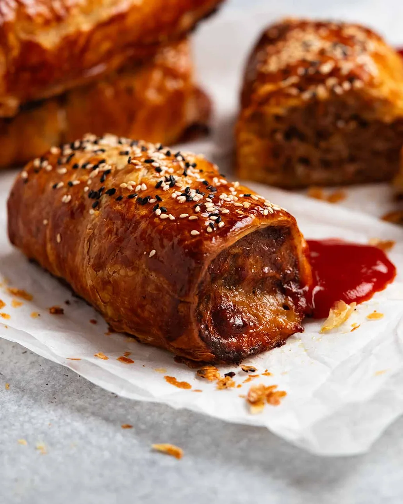

Home
Sausage Roll

Description
Inspired by the gigantic beef sausage rolls at B85 Artisan Bakery in Camden, Sydney, these are meaty and juicy and cheesy. Everything you dream a mighty sausage roll to be!
Ingredients
- 1 Small Onion
- 1/2 Cup Panko Breadcrumbs
- 500g Beef Mince
- 1 Egg
- 2 Garlic Cloves
- 1 Beef Stock Cube
- 1/2 tsp Salt
- 1/4 tsp Black Pepper
- 1/3 Cup Pickled Jalepenos
- 1 1/2 Cups Shredded Cheddar Cheese
- 1/2 Cup Parmesan
- 2 Sheets Puff Pastry
- 1 Egg (separated)
- 1 tsp White Sesame Seeds
- 1/2 tsp Black Sesame Seeds
- Tomato Sauce
Steps
- Preheat oven 200°C/425°F (180C fan-forced).
- Onion soak – Grate the onion in a bowl using a box grater, reserving all the onion juices. Add panko breadcrumbs and toss to wet.
- Everything else but cheese – Then add beef, egg, garlic, stock cube, salt, pepper and jalapeño. Mix well with hands to combine.
- "Crumble" in cheese – Add cheeses, then use fingers to firstly “crumble” the cheese through the beef before mixing well with hands (this method prevents cheese from clumping together).
- Roll – Barely thaw puff pastry (stiffer = easier to handle). Divide meat into 2 equal logs. Roll up in the puff pastry, then overlap the base with double layer, sealing with egg white. Finish with the seam side down and trim off surplus puff pastry (about 2 cm/0.8").
- Finish sausage rolls – Cut each log in half. Cut 3 diagonal slashes on the top of each sausage roll. Brush with egg yolk, sprinkle with sesame seeds.
- Bake – Place the sausage rolls on a paper lined tray. Bake for 35 minutes, then transfer onto rack (to elevate out of fat, Note 5). Bake a further 15 minutes until pastry is deep golden and underside is crispy.
- Cool on rack 5 minutes before attacking! Serve with Aussie tomato sauce or ketchup.